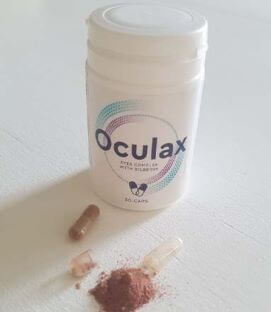

ARTIKEL / NEUESTE ENTDECKUNGEN / Das Ende einer Ära unbequemer Brillen und Kontaktlinsen!...
Das Ende einer Ära unbequemer Brillen und Kontaktlinsen! Die revolutionäre Entdeckung eines österreichischen Wissenschaftlers hilft natürlich, das Sehvermögen wiederherzustellen und zu erhalten!
Es ist wahrscheinlich, dass der Markt für Sehhilfen bald unwiederbringliche Verluste erleiden wird. Experten glauben, dass die Verbesserung der Sehkraft mit natürlichen Mitteln die Verbraucher viel mehr anziehen wird. Die Entwicklung einer neuen, einzigartigen Formel hat die Branche einfach in die Luft gesprengt!
Bereits mehr als 10 Tausend Menschen haben das neue Mittel verwendet und bestätigt, dass es tatsächlich eine Wirkung zur Verbesserung und Aufrechterhaltung der visuellen Funktionen haben kann.
Professor Uwe North (ein Spezialist für Molekularbiologie) beschloss, seinem Vater zu helfen, sein sichtbar vermindertes Sehvermögen wiederherzustellen. Dieses Ereignis war der Schlüssel in der neuen Ära der Hilfstherapie. Nach einem Jahr Laborentwicklung schuf der Professor eine natürliche, sichere und einfache Formel zur Verbesserung der Sehkraft.
Branchenmagazine haben das Produkt bereits als „bahnbrechenden Durchbruch“ bezeichnet und Uwe North erhielt für seine Leistung eine Nominierung für den Best Customer Choice Award. Dank der Wirkung seiner Methode konnten Menschen mit Sehproblemen, unabhängig vom Alter, ihre natürlichen Sehfunktionen spürbar wiederherstellen und Brillen und Kontaktlinsen loswerden.
"Brillen sind keine Hilfe, sondern zusätzliches Unbehagen!" Was ist der Grund dafür?
-
Brillen sind teuer
Der Preis für eine gute Brille mit strapazierfähigem Gestell beginnt bei durchschnittlich 350 Euro.
-
Es verursacht Unbehagen
Brillen neigen dazu, verloren zu gehen, zu brechen. Und damit sind wir wieder beim vorherigen Punkt, denn im Falle eines Bruchs oder Verlustes ist der Erwerb neuer Brille unvermeidlich.
-
Auf lange Sicht ist Brille wertlos
Da die Brille nur hilft, besser zu sehen und nicht die Sehkraft wiederherzustellen, werden Sie im Laufe der Zeit neue brauchen, weil die Sehkraft nicht aufhören wird zu sinken.
Deshalb ist die Entdeckung von Professor North ein echter Durchbruch im Kampf um gutes Sehen.
Brille und Linsen helfen Ihnen nur, wenn Sie sie tragen. Und während der Therapie von Professor North regenerieren sich die Sehzellen und stellen ihr natürliches Sehvermögen ohne Hilfsmittel wieder her. Die Komponenten haben starke regenerierende Eigenschaften. Die tägliche Einnahme hilft nicht nur, das normale Sehvermögen wiederherzustellen, sondern auch zu erhalten.
Die Formel ist jetzt für den Einzelhandel unter der Marke verfügbar. Hergestellt in Form von praktischen Kapseln. Wie eine detaillierte Analyse des Deutschen Forschungszentrums in Stuttgart ergab, ist die Einnahme von für den Körper in der Regel harmlos. Durch diese Therapie konnten Menschen, unabhängig vom Alter, ihre Sehkraft verbessern.
Die Formel von hat eine erhöhte Wirksamkeit aufgrund des hohen Gehalts an B-Vitaminen und Zink. zielt darauf ab, die Vision umfassend zu unterstützen und Müdigkeit und "Alterung" der Augen zu verhindern.
Darüber hinaus stärkt die Sehkraft und erhöht seine Schärfe, da es die Membranen der Gefäße und Kapillaren schützen kann, wodurch die Mikrozirkulation des Blutes verbessert wird, was besonders für den Kristall des Auges und der Netzhaut wichtig ist. Die einzigartige Formel kann das Risiko einer retinalen Dystrophie reduzieren, den Prozess der Wiederherstellung des Sehvermögens nach längerer Sehbelastung beschleunigen.
Herr Marcus Meller (72 Jahre) aus Amstetten ist einer der ersten Personen in Österreich, die Izolivin benutzt haben:
"Ich hatte Probleme mit dem Sehen vor langer Zeit, noch seit meiner Jugend. Aber ich habe nicht viel Wert darauf gelegt, denn jeder von uns hat seine eigenen Probleme. Mir wurde fast sofort eine Brille verschrieben, und all die Jahre habe ich sie nur gewechselt, als meine Sehkraft immer weiter nachließ. Als verschiedene Operationen zur Wiederherstellung der Sehkraft auftraten, hatte ich Angst, das Risiko einzugehen, dass es in meinem Alter gefährlich war. Und mehr noch, es kostet viel Geld. Nicht jeder kann sich so etwas leisten. Und ging ich mit Brille. Bis mir eines Tages ein Bekannter empfohlen hat. Und nach dem ersten Kurs habe ich bereits das Ergebnis gesehen und kann immer noch nicht aufhören zu wundern. Meine Kurzsichtigkeit wurde merklich reduziert, die Augen hörten auf, vor Müdigkeit zu schmerzen, und zunehmend verlasse ich das Haus ohne Brille, da ich in der Lage bin, alles zu betrachten und keine Angst zu haben, dass mir etwas passieren würde."
Warum sollten Sie jeden Tag Unbehagen haben oder eine unbequeme Brille tragen, wenn vorhanden ist?

Die Wirksamkeit von wird von Menschen bewiesen, die seinen Kurs gemacht haben. Diese Menschen neigen dazu, viel Zeit am Computer zu verbringen, oder sind anfällig für Sehstörungen aufgrund des Alters.
Befragung von Personen nach der Einnahme von bestätigt seine Wirkung
um 50% bessere Sichtbarkeit von Objekten in der Nähe/p>
Regeneration - Objekte in der Ferne sind klarer geworden
bessere Sichtbarkeit im Dunkeln
deutlich erhöhte Sehschärfe
1. Woche
2. Woche
3. Woche
4. Woche
1 Woche - man bemerkte eine Verbesserung der Sehkraft um 50%, es wurde besser, Objekte in der Nähe zu sehen
2 Woche - man begann, Objekte in der Ferne klarer zu unterscheiden (Regeneration geschädigter Sehorgane tritt auf)
3 Woche - es wurde besser im Halbdunkel zu sehen, ohne unnötige Augenbelastung
4 Woche - man behauptet, eine signifikante Wiederherstellung des Sehvermögens gefühlt zu haben
Die gute Nachricht ist, dass Sie mit einem 50% Rabatt günstiger bekommen, wenn Sie dem Discount Club beitreten. Der Rabatt steht allen zur Verfügung, die nach 1938 geboren wurden. Die Aktion gilt bis (einschließlich). Sie können den Kurs des Mittels über das unten angegebene Bestellformular bestellen.
Meistens gelesen Sie:

Kommentare
Bettina
Ich habe dieses Mittel eingenommen. Ich bestellte es für die Teilnahme an einem Discount-Club, und war überrascht von so niedrigen Kosten!
Klaudia
Als ich diesen Artikel sah, hatte ich nicht einmal erwartet, dass es so viele positive Bewertungen geben würde. Vielen Dank! Ich werde es auch versuchen!
Simon
@Inga, in solchen Dingen spielt das Aussehen keine Rolle. Aber Sie haben recht, Kapseln sind immer besser als unbequeme Brille! Ich hatte einen signifikanten Verlust des Sehvermögens, also wagte ich auch, ein neues Mittel auszuprobieren. Und ich habe es nicht bereut!
Annika
Meine Mutter ist Rentnerin, also habe ich eine Frage an diejenigen, die es eingenommen haben: Wie alt sind Sie, gibt es ältere Menschen im Alter von 80 Jahren oder mehr hier? Ich möchte wissen, ob meine Mutter eine Chance hat.
Annika
Danke @Matteo für die Antwort. Dann bestelle ich diese Kapseln für meine Mutter. Gesundheit für Sie und Ihren Vater!
Jutta
Ich respektiere unsere Wissenschaftler und bin dankbar, dass sie die Mittel mit einer natürlichen Zusammensetzung erfinden!
Lukas
Ich bin 36, Programmierer von Beruf. Sie können sich vorstellen, wie schwer es ist, den ganzen Tag vor dem Bildschirm zu sitzen. Ständig verwendete ich Tropfen, um die Augen nicht so müde und krank zu machen. Aber von ihnen gibt es nur Trockenheit in den Augen. Aber nur eine Woche nach Beginn des Kurses mit wurde mir klar, dass ich mich nicht erinnern kann, wann ich die Tropfen aus der Schublade geholt habe. Ein hervorragendes Mittel
Philip
Es ist praktisch, dass es sofort ein Bestellformular gibt. Danke!
Sonja
Kinder müssen sich um ihre Eltern kümmern! Denken Sie daran! Und wenn Ihre Eltern auch noch schlimmer sehen, zögern Sie nicht und helfen Sie ihnen, wie ich es getan habe.
Gretta
Eine große Leistung. Lob für die deutschen Wissenschaftler!